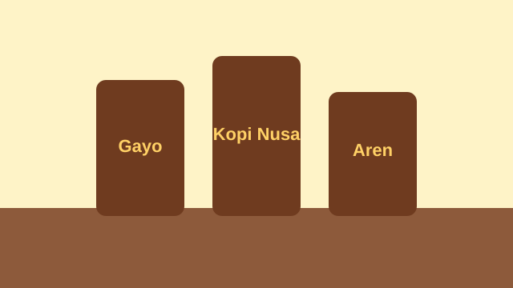
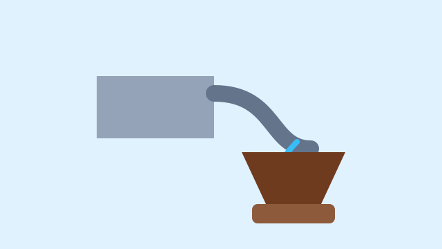

Galeri Kopi Nusa
Media Usaha


Nada Penanda Kedai
Nada uji singkat memastikan elemen audio dan kontrol browser dapat diperiksa.
Galeri Produk
Data produk akan dimuat melalui JavaScript.


Nada uji singkat memastikan elemen audio dan kontrol browser dapat diperiksa.
Data produk akan dimuat melalui JavaScript.